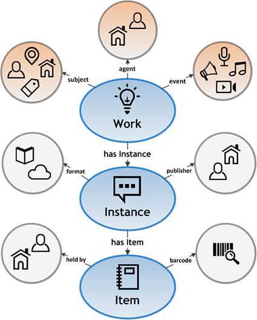
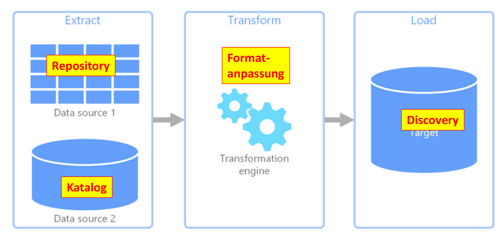

Daten & Metadaten
Vom 9.-12. Oktober 2023 findet an der TH Wildau der 3. Booksprint statt für die Kapitel
Digitalisierung von Kulturgütern: Digitale Bibliotheken und Portale, Workflows, Metadaten, Standards, OCR/OLR, Viewer, 3D-Objekte…
Forschungsnahe Dienste: Repositorien, Open-Access, FDM, Forschungsinformationssysteme, Open Science, Open Data, Digital Humanities…
Kommunikation und Wissensmanagement: Öffentlichkeitsarbeit, CMS, Social Media, E-Learning, Videokonferenzen, Chat-Systeme, Wikis, Intranet…
sowie zu Gestaltung und Endredaktion des Handbuch IT in Bibliotheken.
Zur Sammlung und Bereitstellung von Informationen werden von Bibliotheken Dokumente unterschiedlichster Form (Bücher, Filme, Forschungsdaten, Objekte…) nachgewiesen. Zur Verwaltung dieser Medien werden die Dokumente mit Metadaten beschrieben. Neben diesen Metadaten beinhalten bibliothekarische Informationssysteme zunehmend auch Dokumente selbst als digitale Inhalte wie sogenannte Volltexte, Digitalisate und Forschungsdaten (siehe Kapitel Digitalisierung und Forschungsnahe Dienste). Viele der im Folgenden beschriebenen Grundlagen zu Eigenschaften, Arten und Verarbeitung von Daten gelten sowohl für Metadaten als auch für digitale Inhalte.
Daten
Im Wesentlichen bestehen Daten im Sinne dieses Buchs aus einer Folge von Bits. Abgesehen von ihrer Anzahl in Bytes lässt sich auf dieser Ebene allerdings nichts weiter über Daten sagen. Uns interessiert daher mehr, für was die Daten stehen – beispielsweise für eine Jahreszahl, ein Bild oder für den Titel eines Dokumentes. Dabei besteht ein Unterschied ist der zwischen
der Struktur von Daten (Syntax)
und der Bedeutung von Daten (Semantik).
Zur Interpretation von Daten dienen Kodierungen in Form von Datenformaten und Identifikatoren. Wo genau jeweils die Grenze zwischen Syntax und Semantik liegt, hängt davon ab, auf welcher Ebene und mit welcher Kodierung Daten betrachtet und verarbeitet werden (siehe Tabelle 5.1):
| Datenebene | Bedeutung | Kodierung |
|---|---|---|
1100001 |
Die Zahl 97 (64+32+1) | Byte als Zahl |
97 |
Der Buchstabe „a“ | ASCII oder Unicode |
a |
Unterfeld für Haupttitel | Feld 021A im PICA+ K10plus-Format |
a |
Unterfeld für Umfangsangabe | Feld 300 im MARC21 Format |
Ein Großteil der Datenverarbeitung besteht darin darin Daten, zum Beispiel im Rahmen von ETL-Prozessen, von einer Kodierung in eine andere Kodierung zu überführen, um sie anschließend leichter interpretieren zu können. Bei der Konvertierung von Daten von einem in ein anderes Datenformat reduziert sich das implizite Datenmodell der Konvertierung auf den kleinsten gemeinsamen Nenner beider Formate.
Zur Beschreibung von Daten dienen
formale Schemas auf Ebene der Syntax
und Datenmodelle auf Ebene der Semantik.
Leider liegen beide oft nicht explizit vor, sondern müssen anhand von Beispielen, Anwendungen und Dokumentation mühsam ermittelt werden. Im Idealfall entsprechen Daten einem klar definierten Datenformat.
Datenformate
Datenformate definieren eine Struktur, die sich in einer oder in mehreren austauschbaren Syntax-Varianten ausdrücken lässt und deren Bedeutung durch ein Datenmodell festgelegt ist. Beispielsweise definiert der Unicode-Standard eine Menge von Schriftzeichen (Buchstaben, Sonderzeichen, Emojis…) und verschiedene Verfahren, um Zeichenketten in Bytes zu kodieren (UTF-8, UTF-16…). Syntax-Varianten werden auch als Serialisierung bezeichnet. Die meisten Datenformate haben nur eine Serialisierung, so dass Format und Syntax meist synonym verwendet werden. Einzelne Syntax-Elemente entsprechen Bestandteilen im Datenmodell (siehe Tabelle 5.2), daher werden in der Beschreibung von Daten auch diese beiden Ebenen meist nicht sauber getrennt.
| XML-Syntax | XML-Modell |
|---|---|
<name /> oder <name>...</name> |
XML-Element |
name="Inhalt" |
XML-Attribut |
<!-- ... --> |
Kommentar |
Als Faustregel kann gelten, dass bei statischer Betrachtung von Daten der Bezug auf ihre Syntax sinnvoll ist, während zur Verarbeitung von Daten eher auf die Bestandteile ihrer Modelle Bezug genommen werden sollte.
Datenformate lassen sich grob in zwei Kategorien unterteilen:
Strukturierungssprachen wie CSV, XML, JSON und RDF ermöglichen es, Daten in kleinere Einheiten zu unterteilen und miteinander in Beziehung zu setzen. Die Sprachen basieren auf allgemeinen Ordnungsprinzipien (Felder, Tabellen, Hierarchien, Netzwerke…) und ihre Modelle haben darüber hinaus keine eigene Semantik. Die einfachste Strukturierungssprache ist das Prinzip der Zeichenkette.
Anwendungsformate legen die Struktur von Daten für konkrete Arten von Inhalten fest (Metadatenformate zur Beschreibung von Dokumenten, Bildformate für Bilder…). Ihre Modelle verweisen letztendlich auf reale Objekte und Eigenschaften. Viele Anwendungsformate sind ihrerseits mittels einer Strukturierungssprache kodiert, zum Beispiel basiert das DataCite-Format zur Beschreibung von Forschungsdaten auf dem XML-Modell.
Darüber hinaus gibt es besondere Formate, deren Anwendung in der Verarbeitung von Daten liegt. Neben Programmiersprachen, die selbst nicht als Datenformate betrachtet werden, sind dies folgende Sprachen:
Schemasprachen wie XML Schema, JSON Schema und nicht zuletzt reguläre Ausdrücke dienen der formalen Beschreibung der Syntax von Datenformaten. Dabei bezieht sich jede Schemasprache auf eine Strukturierungssprache (XML Schema für XML-Formate, Avram für feldbasierte Formate…).
Abfragesprachen dienen dem Verweis auf einzelne Teile von Datensätzen. Sie beziehen sich ebenfalls immer auf eine Strukturierungssprache (zum Beispiel XPath für XML, JSON Path für JSON…) und sind für die Verarbeitung von Daten notwendig.
Modellierungssprachen helfen zur Beschreibung von Datenmodellen. Die häufigsten Modellierungssprachen basieren auf dem Entity-Relationship-Modell. Da zwischen Syntax und Semantik irgendwann die reine Datenebene verlassen werden muss, sind die wichtigsten Mittel zur Datenmodellierung allerdings Diagramme und Beschreibungen in natürlicher Sprache.
Die Verwendung von Schema-, Abfrage- und Modellierungssprachen hilft, viele häufige Fehler bei der (Meta)datenverarbeitung zu vermeiden. Ein Beispiel hierfür ist das Resource Description Framework (RDF) mit dazu gehörigen Schemasprachen (SHACL/ShEx), Abfragesprachen (SPARQL) und Modellierungssprachen (RDFS/OWL). In anderen Fällen wird aus Mangel an Werkzeugen und Kenntnissen auf spezielle Datensprachen verzichtet und stattdessen auf allgemeine Programmiersprachen zurückgegriffen.
Reguläre Ausdrücke sind das gängigste Mittel zur Beschreibung der Syntax von Daten. Gleichzeitig können mit ihnen Zeichenketten nach Mustern durchsucht werden. Ein regulärer Ausdruck für die Syntax einer ISBN-13 mit optionalen Trennstrichen ist beispielsweise:
(97[89])-?([0-9]{1,5})-?([0-9]+)-?([0-9]+)-?[0-9]Üblicherweise decken Schemasprachen nicht alle Aspekte eines Datenformat ab: so lässt sich die Korrektheit der abschließenden Prüfziffer ([0-9]) nicht mit einem regulären Ausdruck überprüfen.
Eine ausführlichere Beschreibung von Datenformaten mit bibliothekarischem Schwerpunkt bietet die Datenbank format.gbv.de. Grundlagen von Metadaten und Ontologien vermitteln Assfalg (2023) und Rölke und Weichselbraun (2023).
In der Praxis werden Daten in einem Datenformat zusätzlich durch anwendungsspezifische Auslegungen und Einschränkungen geprägt, darunter Format-Varianten, Metadatenprofile bzw. Anwendungsprofile, Erfassungsregeln und die jeweilige Erfassungspraxis.
Datenerfassung
Traditionell werden bibliothekarische Metadaten durch Katalogisierung erstellt. Die Verwaltung der Katalogdaten erfolgt entweder lokal oder gemeinsam in einer Verbunddatenbank. Der Vorteil der Verbundkatalogisierung liegt darin, dass jedes Dokument nur einmal zentral beschrieben werden muss, während bei lokaler Katalogisierung durch Fremddatenübernahme nur zum Teil auf vorhandene Kataloge zurückgegriffen werden kann.
Im Idealfall sollte die Erfassung nach Autopsie, also auf Grundlage des vorliegenden Werkes, durch geschultes Personal und nach etablierten Regelwerken (Katalogisierungsrichtlinien) erfolgen. Um möglichst viele Publikationen zu erfassen, wird jedoch zunehmend auch auf anderweitig erfasste Metadaten von Verlagen, Repositories und aus anderen Quellen zurückgegriffen. Dazu müssen Daten unterschiedlicher Erschließungstiefe und -qualität im Rahmen von ETL-Prozessen gesammelt, analysiert und mit vorhandenen Daten vereinheitlicht werden. In jedem Fall muss beachtet werden, dass sich Regeln und Umstände, nach denen Daten erfasst werden, mit der Zeit ändern können (beispielsweise der Umstieg der Erfassungsregeln von RAK auf RDA) und dass das Ergebnis auch davon abhängt, wie gut überprüft werden kann, inwieweit die Anforderungen an die Daten sind.
Darüber hinaus gibt es Verfahren zur automatischen Erstellung von Metadaten aus vorhandenen Dokumenten, beispielsweise zur Erkennung und Auswertung von Literaturangaben und zur thematischen Einordnung von Dokumenten. Mit diesen Verfahren lassen sich zwar größere Mengen von Daten erfassen, es muss aber immer mit einer gewissen Fehlerrate gerechnet werden.
Welche Art und welcher Umfang von Fehlern und Uneinheitlichkeiten bei der Datenerfassung tolerierbar sind, hängt letztlich davon ab, wozu die Daten erfasst werden: so gelten beispielsweise für eine historische Bibliographie andere Maßstäbe als für einen Suchindex.
Nicht zuletzt sollte bedacht werden, dass Geschwindigkeit und Qualität von Datenerfassung auch von der Usability der Werkzeuge abhängen, mit denen Daten erstellt, bearbeitet und analysiert werden können.
Mehr zur bibliothekarischen Datenerfassung in den Grundlagen der Informationswissenschaft (2023), Teil B.
Identifikatoren und Normdaten
Ein wesentlicher Teil von Daten besteht aus Identifikatoren (IDs wie Nummern, Codes…) zum Verweis auf externe Objekte oder an anderer Stelle verwaltete Informationen. Identifikatoren ermöglichen die eindeutige Referenzierung gleicher Dinge in unterschiedlichen Kontexten, so dass Daten aus verschiedenen Quellen miteinander abgeglichen und kombiniert werden können.
Identifikator-Systeme
Neben eher intern genutzten Datensatz-Identifikatoren (z.B. die PPN des Bibliothekssystems PICA oder die ZDB-ID der Zeitschriftendatenbank) sind vor allem international standardisierte Identifikatoren von Bedeutung. Beispiele für solche Identifier-Systeme mit Relevanz für bibliothekarischer Daten sind die nachfolgenden:
Die International Standard Book Number (ISBN) wird von Verlagen für Bücher vergeben. Seit 2007 ist die 13-stellige ISBN Teil des EAN-Barcode-Systems.
Die International Standard Serial Number (ISSN) identifiziert Zeitschriften und Schriftenreihen.
Der Digital Object Identifier (DOI) identifiziert digitale Publikationen in elektronischen Zeitschriften und Repositories.
Der International Standard Identifier for Libraries and Related Organisations (ISIL) referenziert Bibliotheken, Archive, Museen und verwandte Einrichtungen.
Die Open Researcher and Contributor ID (ORCID) identifiziert Autor*innen von wissenschaftlichen Publikationen.
Der Uniform Resource Locator (URL) dient als Adresse einer digitalen Ressource im Web und wird teilweise gleichzeitig als deren Identifikator eingesetzt.
Das System der Uniform Resource Identifier (URI) ermöglicht die Vereinigung verschiedener Identifier-Systeme und bildet die Grundlage von RDF und Linked Open Data (LOD).
Gemeinsam ist den Identifikatoren, dass sie jeweils eine definierte Syntax haben (z.B. XXXX-XXXY im Falle der ISSN wobei X für eine Ziffer und Y für eine Prüfziffer steht) deren Bestandteile hierarchisch von einer zentralen Instanz festgelegt werden. Nach dem Prinzip des Namensraums kann dabei die Vergabe von Teilen an untergeordnete Organisationen delegiert werden. Beispielsweise werden ISIL für Bibliotheken in Deutschland beginnend mit dem Präfix „DE-“ durch die ISIL-Agentur an der Staatsbibliothek zu Berlin verwaltet.
Völlig dezentrale Identifikatoren gibt es zur Identifizierung von digitalen Objekten nur in Form von Prüfsummen, die sich automatisch aus vorhandenen Daten berechnen lassen (SHA-Summe, IPFS-Adresse, Prüfziffer…).
Normdaten
Einfache kontrollierte Vokabulare bestehen aus normierten Listen von eindeutigen Benennungen – beispielsweise könnte in einem Gemüse-Vokabular festgelegt sein, dass immer „Karotte“ statt „Möhre“ verwendet werden muss. Wird jeder Eintrag mit einem künstlichen Identifikator versehen, muss die Benennung selbst nicht eindeutig sein. Existiert eine Datenbank zum Nachschlagen dieser IDs, so wird diese auch als Normdatei bezeichnet. Ihre Datensätze dienen als Normdaten der eindeutigen Identifizierung von Personen, Organisationen, geographischen oder administrativen Einheiten, Themen oder anderen Entitäten an verschiedenen Stellen. Ein Normdatensatz besteht mindestens aus einem Identifikator und einer Vorzugsbenennung als primärer Name. Oft gibt es weitere identifizierende Merkmale wie alternative Benennungen, Lebensdaten von Personen, Ortsangaben u.ä. sowie Verknüpfungen zwischen verschiedenen Entitäten.
Umfang und Komplexität von Normdateien reichen von einfachen Listen bis zu komplexen Wissensgraphen. Ein prominentes bibliothekarisches Beispiel ist die Gemeinsame Normdatei (GND), in der neben Personen auch Körperschaften, Veranstaltungen, Geografika, Werke und Sachschlagwörter miteinander vernetzt sind.
Zur Anreicherung von Daten mit Normdaten mittels Entity Recognition (Erkennung von Entitäten in Daten) und Entity Linking (Abgleich von Entitäten mit IDs anderer Normdateien) sollte unterschieden werden zwischen:
Normdateien mit Entitäten wie Personen (ORCID), Publikationen (DOI, ISBN), Sprachen (ISO 639) etc. die sich grundsätzlich eindeutig unterscheiden lassen sowie
Normdateien, deren abstrakte Entitäten von Kontext und Modellierung abhängen (Klassifikationen, Thesauri…).
Zur Verwaltung von Normdaten gibt es einige Datenformate wie MARC 21 for Authority Data und ISAAR (CPF). Als gemeinsamer Nenner auch außerhalb des Bibliotheksbereichs gilt das RDF-basierte Simple Knowledge Organization System (SKOS), für das mit JSKOS auch eine JSON-Variante existiert. Vor allem kleinere oder speziellere Normdateien (z.B. Codelisten im Rahmen der Katalogisierung) liegen allerdings selten in maschinenlesbarer Form vor.
Das Basic Register of Thesauri, Ontologies & Classifications (BARTOC) erfasst Informationen zu Normdateien aller Art, darunter auch Verfahren zum technischen Zugriff.
Metadatenformate
Neben allgemeinen Datenformaten sind für die Bibliotheks-IT vor allem Metadatenformate zur Beschreibung von Dokumenten relevant. Die meisten der im Folgenden beschriebenen Metadatenformate spielen außerhalb von Kultureinrichtungen keine wesentliche Rolle. Für digitale Objekte (METS/MODS, LIDO, CDWA, EN 15907, EAD… siehe Kapitel Digitalisierung) und für Forschungsdaten (DataCite, siehe Kapitel Forschungsnahe Dienste) gibt es darüber hinaus spezielle Formate .
Arten von Metadaten
Folgende Arten von Metadaten können nach ihrer Funktion unterschieden werden:
Deskriptive (=beschreibende) Metadaten zur Identifizierung und inhaltlichen Beschreibung wie Titel, Verfasser, Schlagwörter etc.
Administrative (=Verwaltungs-) Metadaten wie Angaben zu Herkunft, Speicherung, Zugriffsrechte, Verwaltung etc.
Strukturelle Metadaten über den Aufbau von Dokumenten wie die Einteilung in einzelne Kapitel, Abschnitte, eingebundene Medien etc. Die Grenze zwischen digitalen Inhalten und ihrer Struktur ist allerdings mitunter fließend.
Technische Metadaten zu Merkmalen wie Umfang, verwendete Datenformate etc.
Je nach Anwendung gibt es spezielle Metadatenformate oder es werden verschiedene Arten von Beschreibungen in einem Format zusammengefasst.
Feldbasierte bibliothekarische Metadatenformate
Machine-Readable Cataloging (MARC) ist das älteste und noch immer wichtigste Format für den Austausch von Daten zwischen Bibliotheken. Die aktuell relevante Variante ist MARC 21, insbesondere das Format MARC 21 für bibliographische Daten. Neben der binären Kodierung kann MARC 21 auch in XML und JSON kodiert werden. Viele Eigenheiten und Probleme des Formats sind historisch bedingt, eine Alternative konnte sich bislang nicht durchsetzen.
PICA ist das von MARC inspirierte Datenformat der Katalogisierungssysteme CBS und LBS (Voß 2022). Das wichtigste Anwendungsprofil ist das K10plus-Format des BSZ/GBV.
MAB und allegro sind ebenfalls an MARC angelehnte, feldbasierte Formate aus dem deutschsprachigen Raum, die allerdings nur noch sporadisch verwendet werden.
Datenmodelle und RDF-Formate
Dublin Core bzw. das Dublin Core Metadata Element Set (DCMES) hat als kleinster gemeinsamer Nenner der meisten Metadatenstandards die größte Verbreitung. Es besteht aus 15 Basiselementen wie creator, title, date, und description und Erweiterungen mit den DCMI Metadata Terms wie „Alternative Title“, „Date Created“ und „Date Available“.
Die Functional Requirements for Bibliographic Records (FRBR) sind ein sehr abstraktes Metadatenmodell. Sie beinhalten insbesondere eine Einteilung von bibliographischen Entitäten in die Beschreibungsebenen „work“, „expression“, „manifestation“ und „item“.
Die BIBFRAME-Ontologie wurde entwickelt um MARC auf Grundlage von RDF zu ersetzen. Die wesentlichen Elemente sind „work“, „instance“ und „item“ sowie damit verbundene Eigenschaften und Entitätstypen (siehe Abbildung 5.1).
Schema.org ist eine allgemeine Ontologie für strukturierte Daten in Webseiten.

Verlagsdaten und Literaturangaben
Die Formate ONIX, JATS, BITS und CrossRef XML stammen aus dem Verlagsbereich zur Beschreibung von Zeitschriftenartikeln und Büchern. Sie basieren alle auf XML und sind für Bibliotheken für den Datenimport relevant. Datenformate für Literaturangaben (BibTeX, RIS, Endnote, CSL-JSON…) werden dagegen zum Export von Katalogdaten bereitgestellt. Zitationsregeln für Literaturangaben und Ansetzungsregeln von ISBD sind dagegen für den Datenaustausch eher unbrauchbar. Learning Object Metadata (LOM) dient in verschiedenen lokalen Anpassungen der Beschreibung von Lerneinheiten.
Datenverarbeitung
Neben der Erfassung von Daten umfasst das bibliothekarische (Meta)datenmanagement Verfahren zur Konvertierung, Integration und Auswertung von Daten. Diese wesentlichen Schritte werden oft mittels eines ETL-Prozesses zur Übertragung von Daten in ein anderes System vorgenommen. Nach Beschreibung der Bestandteile des ETL-Prozesses wird in diesem Abschnitt auf Werkzeuge und Schnittstellen eingegangen.
ETL-Prozess
Da sich die IT in- und außerhalb von Bibliotheken über verschiedene Organisationen und Systeme erstreckt, müssen an vielen Stellen Daten von einer oder mehreren Quellen in ein anderes Informationssystem übertragen werden. Der grundsätzliche Prozess der Datenintegration, der Quell- und Zielsysteme verbindet, wird als ETL-Prozess bezeichnet. Der Prozess aus drei zentralen Schritten „Extract“, „Transform“ und „Load“ stammt ursprünglich aus dem Bereich des Data Warehousing und findet sich auch in anderen Anwendungsfällen. Im Folgenden wird er am Beispiel der Integration von Metadaten in ein Discovery-System beschrieben. Abbildung 5.2 illustriert den generellen ETL-Prozess mit einigen exemplarischen Arbeitsschritten.

Extraktion
Ziel der Extraktion (Extract) ist die Auswahl und der Abzug relevanter Daten aus verschiedenen Datenquellen. Hierbei handelt es sich primär um einen technischen Vorgang, dem sogenannten Harvesting, welcher automatisiert oder manuell gestartet werden kann. Der Aufwand und die Qualität des Harvesting können je nach Datenquelle sehr unterschiedlich ausfallen. Denkbare Datenquellen sind Dateien, Datenbanken bzw. Datenbankabzüge, Schnittstellen oder eher unstrukturierte Quellen wie Websites, die zunächst mittels Screenscraping erschlossen werden müssen.
Der Extraktionsvorgang erfolgt bei Bedarf regelmäßig, um die Daten im Zielsystem aktuell zu halten. Mögliche Aktualisierungsintervalle sind:
periodisch, das heißt in zeitlich regelmäßigen Abständen unabhängig von der jeweiligen Aktualisierungen der Daten in den Quellsystemen
ereignisgesteuert immer wenn bestimmte Bedingungen wie zum Beispiel die Änderung von Daten in den Quellsystemen eintreten
manuell beispielsweise, wenn Daten aus Quellsystemen ad hoc importiert werden sollen. Manuelle Aktualisierungen bieten sich vor allem an, wenn der Inhalt der Datenquellen weitestgehend statisch ist, da die dauerhaft verlässliche Aktualisierung im Zielsystem ohne Automatismus nicht garantiert ist.
Der Extraktionsvorgang ist technisch relativ einfach handhabbar, wenn strukturierte Datenformate und/oder Schnittstellen existieren — die wesentlichen Aufwände finden sich dann im nachfolgenden Transformationsschritt. Anders sieht es aus, wenn beispielsweise Daten manuell eingesammelt werden müssen oder Screenscraping notwendig ist. Beim Screenscraping müssen aufwändig Extraktionsskripte erstellt werden um Daten aus Webseiten in ein strukturiertes Format zu überführen. Diese Skripte sind zudem sehr fehleranfällig und müssen jedes mal angepasst werden wenn die Betreiber der Datenquelle Veränderungen vornehmen.
Die extrahierten Daten werden in einem sogenannten Arbeitsbereich abgelegt und dort im nächsten Prozessschritt aufbereitet.
Transformation
Daten aus verschiedenen Quellsystemen liegen zumeist in unterschiedlichen Formaten mit unterschiedlichen Datenmodellen vor. Neben Unterschieden in der Syntax können gleiche Sachverhalte auch auf semantischer Ebene unterschiedlich beschrieben sein, da die Daten mitunter für abweichende Anwendungsfälle erfasst wurden. So müssen beispielsweise in einem Discovery-System Metadaten zur einfachen Beschreibung so aufbereitet werden, dass sie auch erweiterte Suchstrategien unterstützen.
Ziel der Transformation ist es, alle Daten in ein einheitliches Format mit gemeinsamen Datenmodell zu überführen. Dieses Zielformat wird beim ETL-Prozess auch als Schema bezeichnet. Die Vereinheitlichung des Schemas (Mapping) ist ein wesentlicher Schritt jeder Datenkonvertierung. Zur Minimierung Transformationsaufwand dienen gemeinsame Standards wie MARC21 als Austauschformat oder die einheitliche Verwendung von RDF-Ontologien.
Über die einfache Konvertierung hinaus sind im Rahmen der Transformation oft weitere Aufbereitungen zur Vereinheitlichung und Verbesserung der Datenqualität notwendig. Beispiele hierfür sind:
Prüfung und Vereinheitlichung der Zeichencodierung auf normalisierten Unicode
formale Anpassungen von Daten wie die Vereinheitlichung von Datumsformaten, Ländercodierungen etc.
Erkennung und Eliminierung von Duplikaten
Abgleich, Vereinheitlichung und Konsistenzprüfung von Aussagen über dieselben Objekte aus verschiedenen Datenquellen
Anreicherung oder Korrektur von Datensätzen mittels Zusatzinformationen aus Normdaten oder anderer zusätzlicher Datenquellen
Der Aufwand der Transformation sollte nicht unterschätzt werden, da die Datenqualität verschiedener Datenquellen stark variieren kann und Qualitätsprobleme oft erst spät entdeckt werden. Zudem können sich Datenquellen und ihre Qualität zwischen Aktualisierungen ändern. Sofern die Datenübernahme nicht nur einmalig stattfinden soll (Konversion), ist die Betreuung des Transformationsschrittes eine Daueraufgabe.
Da im Transformationsschritt regelmäßig Massendaten analysiert und modifiziert werden müssen, ist der Einsatz von IT-gestützten Werkzeugen und Verfahren der Datenanalyse unerlässlich. Die aus der Analyse gewonnenen Erkenntnisse müssen wiederum kontinuierlich in die Anpassung des Schema-Mappings einfließen, damit der Transformationsprozess nicht ins Stocken gerät.
Laden
Auf die Transformation folgt beim Laden (load) die Überführung der vereinheitlichten Daten in das Zielsystem – beispielsweise in den Suchindex eines Discovery-Systems. Dabei dürfen nur Datensätze in Produktivsysteme übernommen werden, die den Transformationsschritt erfolgreich durchlaufen haben, während für Test- und Entwicklungssysteme andere Regeln möglich sind.
Das Laden selbst ist ein technisch beherrschbarer Schritt, welcher optimalerweise darauf abzielt, das Zielsystem ohne Ausfallzeiten aktuell zu halten. Bei Änderungen des Schemas muss deshalb besonders darauf geachtet werden, gleichzeitig entsprechende Anpassungen im Zielsystem vorzunehmen. Daneben ist es bei absehbaren Änderungen ratsam, das Schema und die Verarbeitung von Daten im Zielsystem von vornherein flexibel zu gestalten.
Umsetzung des ETL-Prozess
Die Umsetzung von Datenkonvertierung und ETL-Prozessen erfolgt im bibliothekarischen Umfeld oft über selbst entwickelte Skripte für das Harvesting und die Transformation. Das entsprechende Know-How ist in der Regel auf wenige Köpfe verteilt und kann auch nicht leicht durch das Hinzuziehen externer Expertise verfügbar gemacht werden.
Es gibt einige kommerzielle ETL-Komplettlösungen mit Data-Warehouse- oder Business-Intelligence-Hintergrund. Angesichts der teils erheblichen Einstiegskosten und zur Vermeidung von vendor-lock-in sind für Bibliotheken möglichst einfache und allgemeine Werkzeuge zur Datenverarbeitung jedoch meist die bessere Wahl. Die Vorteile etablierter ETL-Werkzeuge liegen in Schulungsmöglichkeiten und der Verfügbarkeit externer Expertise. Mit Catmandu, Metafacture und OpenRefine gibt es mehrere Open-Source ETL-Frameworks, deren eingeschränkter Funktionsumfang und Usability durch Anpassungen für bibliothekarische Datenformate und Schnittstellen möglicherweise aufgewogen werden.
Grundsätzlich lassen sich die kontinuierlich anfallenden Aufwände der Transformation und Qualitätssicherung durch ein ETL-Werkzeug nicht vermeiden, sondern nur besser handhabbar machen. Dazu sollten die einzelnen Arbeitsschritte zentral verwaltet und dokumentiert werden, beispielsweise durch ein Versionskontrollsystem. Durch den Fokus auf Usability kann mittels ETL-Werkzeugen bibliothekarisches Personal stärker eingebunden werden. Da hier insbesondere im Bereich der Programmierung die Einstiegshürden niedriger sind, ist es Fachpersonal leichter möglich, direkt Änderungen und Optimierungen am ETL-Prozess vorzunehmen. Bei einer reinen Verankerung von ETL im IT-Bereich sind solche Eingriffe dagegen nur in Zusammenarbeit von IT und Metadaten-Expert*innen umsetzbar.
In jedem Fall gehen mit der Einführung von ETL-Werkzeugen in die bibliothekarische Arbeit immer auch individuelle Anpassungen im Prozess von Extraktion, Transformation und Laden einher. Dieser Aufwand kann sowohl gegen die Einführung solcher Werkzeuge sprechen als auch dafür, vorhandene „Bastellösungen“ zu evaluieren und zu konsolidieren.
Werkzeuge
Für die Verarbeitung von Daten im Rahmen bibliothekarischer IT-Systeme werden grundsätzlich die gleichen Werkzeuge verwendet wie außerhalb des Bibliothekswesens, daher wird an dieser Stelle auf eine allgemeine Einführung in die Datenverarbeitung verzichtet. Ganz allgemein sind hier als Werkzeuge
Mittel zur Dateiverwaltung und ein Texteditor unabdingbar,
allgemeine Kommandozeilenprogramme (
curl,sort,grep…) sehr zu empfehlenund Programmiersprachen vor allem für komplexere Aufgaben hilfreich.
Material und Kurse für die praktischen Grundkenntnisse mit Bibliotheksbezug finden sich insbesondere in den Bereichen Data Librarianship und Data Science.
Werkzeuge für konkrete Datenformate orientieren sich an den zugrunde liegenden Strukturierungssprachen: so gibt es beispielsweise eigene Editoren oder Editor-Plugins für XML-Daten und JSON-Daten und entsprechende Kommandozeilentools wie xmlstarlet für XML und jq für JSON. Für tabellarische Daten eignet sich etwa eine Tabellenkalkulation oder das tabellenbasierte Werkzeug OpenRefine (openrefine.org).
Für bibliothekarische Datenformate und Schnittstellen gibt es darüber hinaus einige speziellere Werkzeuge:
Programmierbibliotheken wie MARC4J und YAZ erleichtern die Datenverarbeitung im Rahmen eigener Programme.
Anwendungsprogramme wie WinIBW und BibControl erfordern zwar weniger IT-Kenntnisse, sind dafür aber nur eingeschränkt und/oder nur für sehr spezielle Aufgaben verfügbar.
Freie Werkzeuge zum Metadatenmanagement wie die Frameworks Catmandu (librecat.org/Catmandu) und Metafacture (metafacture.org).
Für einzelne Anwendungen und Formate gibt es einige weitere Werkzeuge und es kann sich lohnen, solche Werkzeuge selbst zu entwickeln und als Open Source zur Verfügung zu stellen. Für das PICA-Format sind solche Programme in der Einführung in die Verarbeitung von PICA-Daten (Voß 2022) aufgeführt.
Schnittstellen
Eine API (Application Programming Interface, auch Programmierschnittstelle) ist eine definierte Methode zur Abfrage und/oder Änderung von Daten in einem Informationssystem. Wie die Daten innerhalb des Systems verwaltet werden, ist dabei nebensächlich. Dieses Prinzip ermöglicht die Kombination unterschiedlicher Softwarekomponenten. Wenn möglich, sollten produkt-unabhängige, offen dokumentierte APIs verwendet werden. Im Bibliotheksbereich sind insbesondere folgende APIs relevant:
Z39.50 wurde vor Erfindung des Web zur Suche in Bibliotheksdatenbanken entwickelt. Nachfolger ist das XML-basierte Search/Retrieve via URL (SRU) mit der zugehörigen Abfragesprache Contextual Query Language (CQL).
Das Open Archives Initiative Protocol for Metadata Harvesting (OAI-PMH) dient dem Abruf von Metadaten aus Repositorien. Die Daten können nach Datum und Teilmengen gefiltert werden.
Das NISO Circulation Interchange Protocol (NCIP), das Simple Library Network Protocol (SLNP) und das Standard Interchange Protocol (SIP2) sind interne APIs für Ausleihe und Fernleihe. Sie werden zwischen Bibliotheken, Fernleihservern und zur Anbindung von Verbuchungsautomaten eingesetzt (Michaelis 2014).
Die Patrons Account Information API (PAIA) ist eine offene Schnittstelle zum Zugriff auf Ausleihkonten.
Die Document Availability Information API (DAIA) ist eine offene Schnittstelle zur Abfrage der Verfügbarkeit von Medien.
Mit unAPI können einzelne Datensätze in verschiedenen Formaten abgerufen werden.
Die Reconciliation Service API ermöglicht den Abgleich mit Normdaten zur eindeutigen Referenzierung (siehe Abschnitt Identifikatoren und Normdaten).
Verschiedene Schnittstellen zur Authentifizierung und Autorisierung wie LDAP, Shibboleth und OAuth.
Darüber hinaus bieten die meisten Anwendungen eigene Schnittstellen, zum Beispiel die Solr-API der Suchplattform Apache Solr. Weitere Schnittstellen spielen eher im Bereich Digitalisierung und Forschungsnahe Dienste eine Rolle, beispielsweise die APIs des International Image Interoperability Framework (IIIF).
Datenanalyse
Im Gegensatz zu physischen Objekten sind Daten ihre Beschaffenheit nicht direkt anzusehen. Lediglich der Umfang von Daten in Bytes und ggf. die Anzahl von Dateien und Datensätzen kann einen ersten Anhaltspunkt liefern. Weitere Einschätzungen, insbesondere darüber, ob Daten vollständig oder fehlerhaft sind, setzen eine konkrete Analyse der Daten voraus. Dies beinhaltet auch die Visualisierung von Daten zur Exploration, Kommunikation und Diskussion (Jetter 2023).
Die Auswertung von Daten ist nicht nur für das Qualitätsmanagement relevant (Voß 2021), beispielsweise um im Rahmen des ETL-Prozesses Verteilungen und Ausreißer zu erkennen, sondern auch um aus Daten weitere Erkenntnisse zu gewinnen. So können beispielsweise Ausleihzahlen nach Medien gruppiert für die Bestandsplanung eingesetzt werden. Voraussetzung dafür ist, dass Daten überhaupt vorliegen, sowie Mittel und Kenntnisse zu ihrer Auswertung. Bei fehlenden oder zu umfangreichen Daten können Stichproben erhoben werden, wobei auf Zufälligkeit der Stichprobe und Konfidenzintervall des Ergebnisses geachtet werden muss.
Neben rudimentären Statistik-Kenntnissen helfen bei der Datenanalyse Werkzeuge wie die im vorigen Abschnitt beschriebenen Mittel zur Datenverarbeitung. Für allgemeine Analysen eignet sich vor allem eine Tabellenkalkulation. Für komplexere Analysen gibt es spezielle Statistik-Programme und Programmiersprachen wie SAS und R. Für explorative Analysen und um bei geänderter Datenlage automatisch aktuelle Ergebnisse zu bekommen, bieten sich interaktive Umgebungen wie Jupyter Notebooks oder Observable an. Für spezielle, wiederkehrende Analysen und Aufbereitungen kann es auch sinnvoll sein, eigene Anwendungen zu entwickeln bzw. entwickeln zu lassen. Beispiele hierfür sind BibControl, das Metadata Quality Assessment Framework (MQA), die Deutsche Bibliotheksstatistik sowie Statistikfunktionen als Teil anderer Programme (zum Beispiel Statistik und Reporting als Teil des BMS).